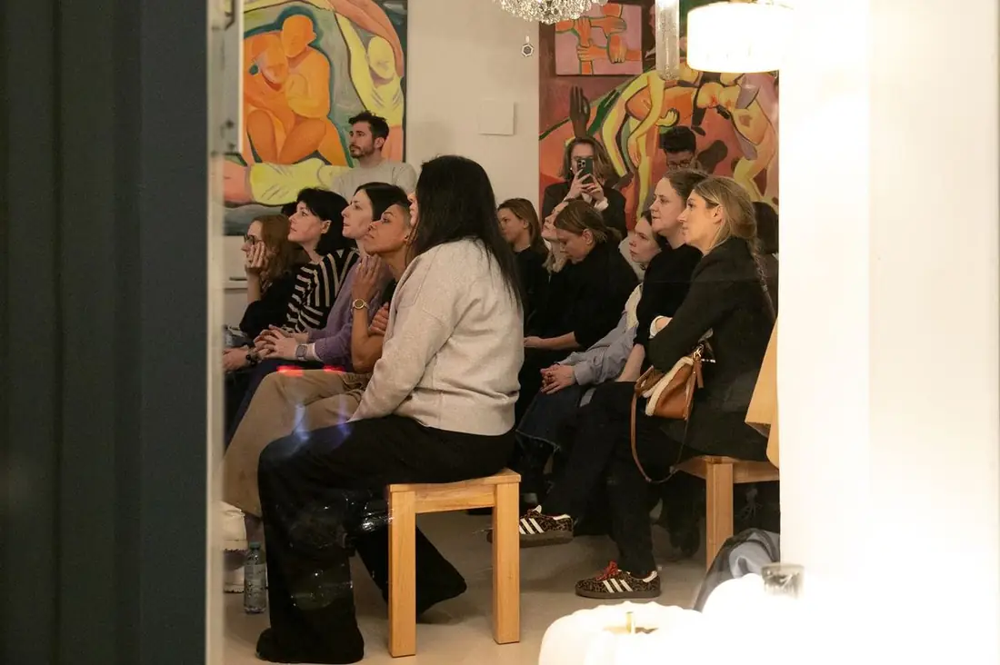
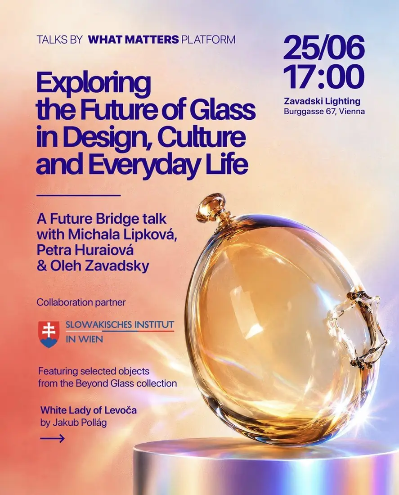

What Matters Platform
Registration pages, newsletters and visuals for two public evenings of a design editorial community. Future Bridge is the first event of the What Matters Platform series.
For guests who had been at Milan Design Week, the invitations went out as postcard-style emails rather than a newsletter blast. On the evenings themselves I coordinated on site and photographed the room.
The posters also ran as short motion loops, generated with AI video tools from the print designs.

